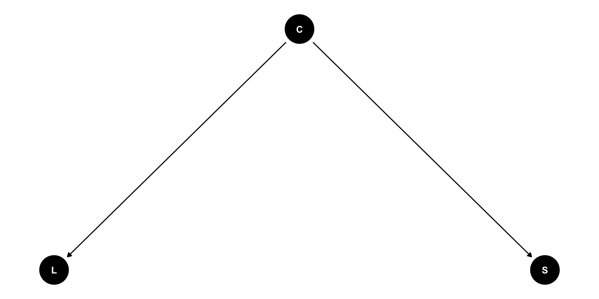

Causal Inference for linguistics
Correlation is causation
2027-08-05
Directed acyclic graphs (DAGs)

Colonial history: simulate

Plant reliance: regression

Number of learners: regression

Workplace and use of prestige variable

| Path | Open | Backdoor |
|---|---|---|
| \(W \rightarrow P\) | yes | no |
| \(W \leftarrow S \rightarrow A \rightarrow E \rightarrow P\) | yes | yes |
| \(W \leftarrow S \rightarrow A \rightarrow P\) | yes | yes |
| \(W \leftarrow S \rightarrow E \rightarrow P\) | yes | yes |
| \(W \leftarrow S \rightarrow E \leftarrow A \rightarrow P\) | no | yes |
Limitations

It assumes DAG is correct.
Adjustment variables should be observable.
Complex systems require dynamic system modelling.